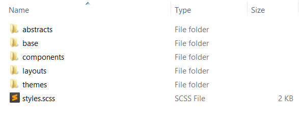
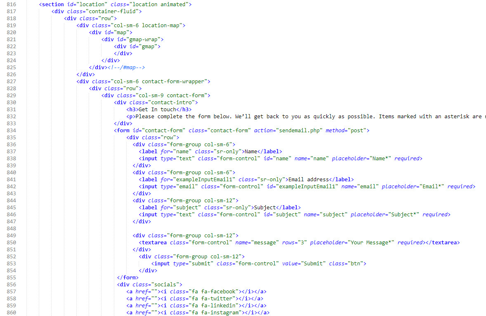
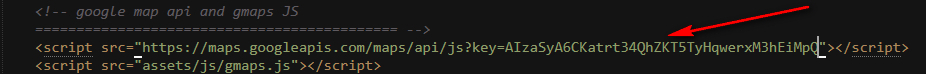

Ionize
Responsive Multipurpose Corporate Bootstrap Theme
- Created: 28th Dec, 2017
- Latest update: 28th Dec, 2017
- by: ThemeItems
- Author: Md Aktaruzzaman
- email: support@themeitems.com
Ionize is a creative Responsive Multipurpose Corporate Bootstrap Theme built with Bootstrap version 3.3.7 and SASS. This template can be used for any small to medium sized corporate company/agency or individulas to build and publish their online profiles, services and branding. This template comes with developer/non developer friendly coding styles as well as it has rich customization capabilities that is suitable for any kind of small business or creative farms. Creative design, stunning animations, eye catching google map and functional contact form are the main features of this template.
We hope, you will be pleased with this mobile friendly template and for any clarification please visit the demo and carefully read this documentation. This document will assist you to have a better idea about this tamplate's structure and functionalities. Though we tried to cover every single details regarding this template, however, for any issue, that is not coverd here, please feel free to communicate us via email.
Template Structure
After downloading the file from themeforest, you will find your template inside the "html" folder

This folder has below structure
- assets (folder) contains all the supporting assets including stylesheets/JS files/images/fonts etc that are used in this template. Child folders are
- _scss This template is built using SASS. All of the sass files are present in this folder. Please visit this section to have a details idea if you want to customize the SASS files
- css This folder contains all the CSS files that has been generated dynamically using the SASS files. You will find 6 CSS files here. Each CSS file serves as one skin/theme for this template. Among these CSS files, only one CSS files is being used by the template for each skin/theme.
For example, main.css is the default skin/theme, main-flat.css is the skin for "Flat" color skin and so on.
In other words, if you need to use any specific color skin, just use the css file for that specific skin.M
You will find some files that have .map extension. These files are really not necessary to show your site in front end, but keep these files as it it because its a good choice for developers to identify/locate the origin of the CSS of an specific element. - fonts contains fonts (font-awesome/glyphicons/flaticons)
- img contains images used in the template
- in this folder you can see, there are sub-folders like "about", "portfolio", "blog" and so on. These name matches the section id name in index.html
- Each folder contains images for respective section. For example, "About" folder contains the images that used in the "About" section in the template
- js Contains all the javascripts used in the template
- videos This folder contains the videos used on home version 2 showcase section background
- about.html
- blog-grid.html
- blog-list-left-sidebar.html
- blog-list-no-sidebar.html
- blog-list-right-sidebar.html
- contact-us-01.html
- contact-us-02.html
- faq.html
- index.html
- index-02.html
- index-03.html
- index-04.html
- portfolio.html
- portfolio-single-01.html
- portfolio-single-02.html
- sendemail.php Responsible for processing "Contact Us" form on Contact Page
- sendquote.php Responsible for processing "GET A FREE QUOTE" form on Home version 2
- services.html
- single-post-left-sidebar.html
- single-post-no-sidebar.html
- single-post-right-sidebar.html
Copy all of theses files and upload those in your domain's root directory and the site is live!
**Note: Images used on the demo is not included in the template you downloaded, rather you will see preview images with the image dimension mentioned in the template. You can always replace those images. For somooth layout, use images with specified dimension and also please compare with the demo to have a better idea
Once you placed all these files and your site is live, you will find a color/skin switcher icon at the left edge/side of your site. Click this icon and you can see there are 6 predefined color scheme/skin/theme present for your site. To disable/remove color skins/themes/schemes, visit here

Fonts used:
- Google font - Open Sans - Used for body text font
- Google font - PT Sans - Used for Heading/Title font
Colors used:
- Default Skin:
- Primary Color: #1ca5b8
- Secondary Color: #ff646c
- Tertiary Color: #0b4249
- Offset Color: #f3f3f3
- Body Font Color: #333
- Border Color: #ccc
- Florence Skin:
- Primary Color: #919190
- Secondary Color: #25BEA0
- Tertiary Color: #43423E
- Offset Color: #f3f3f3
- Body Font Color: #454545
- Border Color: #aaa
- Flat Skin:
- Primary Color: #798F9D
- Secondary Color: #FF7374
- Tertiary Color: #142B43
- Offset Color: #f3f3f3
- Body Font Color: #545454
- Border Color: #ccc
- Main Theme 4 Skin:
- Primary Color: #2494e0
- Secondary Color: #fe7a4a
- Tertiary Color: #0c3e73
- Offset Color: #f7f7f7
- Body Font Color: #545454
- Border Color: #ccc
- Main Theme 5 Skin:
- Primary Color: #775BA3
- Secondary Color: #F98A5F
- Tertiary Color: #442D65
- Offset Color: #f7f7f7
- Body Font Color: #666
- Border Color: #ccc
- Main Theme 6 Skin:
- Primary Color: #29658A
- Secondary Color: #2D9CCA
- Tertiary Color: #25274D
- Offset Color: #f7f7f7
- Body Font Color: #4E4A41
- Border Color: #ccc
Javascripts used: You will find all necessary JS files at the bottom of every page's source code. Please note that, as this template contains multiple pages, so we have only enqueued the JS files that is necessray to run that specific page. Some of the pages have JS files that is spefic for that page only, which you will find on the source code (at the very bottom) of those pages. Here is combined list of all JS files that has been used throughout all pages of this template
Editing the template
Open the page template you want to edit with any text editor like notepad++ or sublime text and you will have the access to the codes immediately. Now please follow below sections or choose from the left side menu to edit specific sections.
Modification of SASS Files
You will find all SASS files (have an extension of .scss) inside assets/_scss folder
Please note that, you should have some knowledge regarding SASS to modify these sass files. If you are not familiar with SASS files, please skip these section. Theses files are only for developers
You will be needed a SASS proprocessor applications (for example Prepros, Codekit etc.) to complie the SCSS files and generatong the CSS files dynamically.
As you can See there are 6 folders and one "style.scss" file. Each folder have different SASS files.
- All SASS variables are present inside "abstract/_variable.scss" file
- All color scheme/skins are present inside "themes" folder.Each file on theme folder is overriding the variables that is present on "abstract/_variable.scss" file, thus generating different skins/themes/schemes.
- All HTML components stylings are present inside "components" folder
- All HTML layouts stylings are present inside "layouts" folder
- Files under "themes" directory will be compiled to the "assets/css/main-{respective-file-name}.css" file.
- "style.scss" file will be compiled to "assets/css/main.css" file
Modification of CSS Files
If you are not familiar with SASS, and want to modify the styles using CSS only, please follow below procedure: (It is strongly recommended not to modify any existing css files as those are generated dynamically using SASS)
- 1. Create a new file named "modifications.css" and keep it inside "assets/css" folder
- 2. Enqueue this newly created CSS files just below the "Master Stylesheet" that is present at header
- 3. Place your new css code in the "modifications.css" file

Important/helper CSS classes:
- Margin related CSS
.mb0- margin-bottom: 0.mt0- margin-top: 0.mt-full- margin-top: {section-height}.mb-full- margin-bottom: {section-height}.mt-half- margin-top: 0.5*{section-height}.mb-half- margin-bottom: 0.5*{section-height}.vmargin- margin-top: {section-height}; margin-bottom: {section-height}.nomargin- margin-bottom: 0;- Padding Related CSS
.pb0- padding-bottom: 0.pt0- padding-top: 0.pb-full- padding-bottom: {section-height}.pt-full- padding-top: {section-height}.pb-half- padding-bottom: 0.5*{section-height}.pt-half- padding-top: 0.5*{section-height}.vpadding- padding-top: {section-height}; padding-bottom: {section-height}.no-padding- padding:0;- Background Color Related CSS
.bgc-primary- background-color: {primary-color}.bgc-secondary- background-color: {secondary-color}.bgc-tertiary- background-color: {tertiary-color}.bgc-transparent- background-color: transparent.bgc-offset- background-color: {offset-color}.bgc-white- background-color: #fff- Text Color Related CSS
.color-primary- color: {primary-color}.color-secondary- color: {secondary-color}.color-tertiary- color: {tertiary-color}.color-offset- color: {offset-color}.color-white- color: #fff
NB: {section-height} refres to the height of section spacing, for example 90px for Default Skin
Header Section
This section (line: 45 to line: 83) contains the Logo, Menu, and the welcome screen when user first visit the site
How to change the Logo?--> Go to line: 56 of index.html, and change the text "Ionize" to your own, You can also, include an image there, replace "Ionize" with the <img> tag, sample line will be like
<a class="navbar-brand" href="/"><img src="your-logo.png" alt=""></a>
How to change the Menu Text?--> Line: 62 to line: 69 are for Menu. you can change/alter the menu text there.
How to change header or screen background image?--> go to images folder and there you will find "showcase.jpg" image with you own (image dimension 1920X1000). replace this image but keep the image name same and you are done!
How to change welcome message?--> Line: 75 to line: 80 contains the welcome message. you can change/alter the text there.
About Section
This section (line: 87 to line: 172) describes about the agencies or farms or individuals and also have the counter of the company's/individual's achievements
How to change the sub-title and title and description text?--> Line: 89 to line: 95. inside this code block, you can replace the text "Who we are", "Story about us" and the description text inside the <p>: .
How to change the images?--> line: 101, line: 115 and 129 has the <img> tag where you can change the images. Keep your images for this section inside "images/about" folder
How to change the achievement counters and text?--> line: 144 to line: 171. You can change the counter number and texts by editing the class text "counter" and text inside <p> tag
Service Section
This section (line: 176 to line: 289) describes about the services provided by the agencies or farms or individuals and also have a parallex backgrounded image to promote the business
How to change the sub-title and title and description text?--> You can replace the texts inside Line: 180 to line: 181.
How to change the service title?--> Find lines that has a class "media-heading" and replace the text inside that <h4> tag. To edit the description, replace the tetxt inside <p> tag just beneath the "media-heading" class
How to change service icons?--> find class name "media-left (for example, line: 185, inside that class, you can see the required <img> tag and you can change the image icons by editing that. And keep your icon images inside "images/icons" folder)"
How to change the parallex backgrund image?--> line: 275 to line: 288 has the required code for the parallex section. But to change the parallex background image (recommended image dimension 1920X1280), you are needed to open the "js/main.js" file and inside main.js, find the below lines and replace the imagepath there 'images/concept-bg.jpg'
"js/main.js" file:
Events Section
This section (line: 293 to line: 421) describes about the agencies or farms or individuals Events and also have a some main events descriptions in a accordion for. This section also has a testimonial slider just below the events description
How to change the sub-title and title and description text?--> You can replace the texts inside Line: 297, line: 298 and line: 300.
How to change the image?--> line: 306 has the <img> tag where you can change the image. Keep your images for this section inside "images/events" folder
Which blocks have the testominial Slider?--> line: 366 to line: 420 has the testimonil or quote slider.
Team Section
This section (line: 426 to line: 510) describes about the Team Members and by hovering the tema member images, you can Ionize their social profiles as well
How to change the sub-title and title and description text?--> You can replace the texts inside Line: 429, line: 430 and line: 432.
How to change the image?--> Find class "single-team" and inside that class you will have the <img> tag (for example, line: 438)
How to change the title and designation?--> Find class "team-description" and replace the title and designation there inside <p> tag (for example, line: 448 to line 451)
Portfolio Section
This section (line: 514 to line: 673) describes and showcases about various types of services they are offering or they already completed and by hovering each portfolio, you can have a view of that project samples in a pop up form. if you dont like the "pop up" you can always remove that by removing the class that has a class "img-pop-up" . Also you can add an external link by editing the "href" attribute there.
How to change the sub-title and title and description text?--> You can replace the texts inside Line: 517, line: 518 and line: 519.
How to change the image?--> Find first <img> tag inside "portfolio" class and replace the image source accordingly
the javascript that are responsible for this portfolio section to filter the projects are Isotope.js
This section also has a client carousel started from line: 627 to line: 672 and uses the owl carousel JS
Testimonial Section
This section (line: 676 to line: 734) describes about the Testimonial or Happy clients section
How to change the sub-title and title?--> You can replace the texts inside Line: 679, line: 680
How to change the image?--> Find class "media-object" inside this code block and inside that class you will have the <img> tag to replace (for example, line: 684)
How to change the title and designation?--> Find class "media-body inside this code block" and replace the title and designation and testominial quote accordingly (for example, line: 686 to line 690)
Blog Section
This section (line: 737 to line: 812) describes about the blog section

Contact Section
This section (line: 816 to line: 868) describes about the blog section. And has two parts. One is the eye catching Google Map Location of the business and second one is a fully functional contact form
How to change the map location?--> You need to open the "js/main.js" file and inside that file find the lines: 198,199 and 212, 213 and provide your own latitude and longitude there. lat=latitude and lng=longitude

**Note: To use the map, as per google you need to use your own API Key and you can get this from here https://console.developers.google.com/. Also here is the supporting doc how to obatin the API key API Key
A sample API key looks like AIzaSyA6CKatrt34QhZKT5TyHqwerxM3hEiMpQ.
After getting your own the API key
Before:

After:
How to get the messages to your own email address when user submit the form?--> Open the "sendmail.php" file provided with the template and replace the email addres there as per below screenshot
miscellaneous
Method for changing the Google Map location for "Contact Us" Page:
Both Contact Us page uses a eye catching google map to display map location. To change the map location, you need to open the "contact-us-01.html" or "contact-us-02.html" file and go to the end of the file where a <script> tag is opened to represent the javascript for map with a comment JS specific to this page only. Here find two pair of lat, lng and provide your own latitude and longitude there. lat=latitude and lng=longitude. The first lat/lng pair is for centering map location and the other lat/lng pair is for the map marker. If you need to change the URL for the map marker, please check the variable named image and change the image URL.
**Note: To use the map, as per google you need to use your own API Key and you can get this from here https://console.developers.google.com/. Also here is the supporting doc how to obatin the API key API Key
A sample API key looks like AIzaSyA6CKatrt34QhZKT5TyHqwerxM3hEiMpQ.
After getting your own the API key:
<script> tag containing comment google map api and gmaps JS and just copy and paste that API key at the last of this line like below screen shot:
Before:

After:
Method for disabling Header Top Bar:
Most of the pages of this template uses a header top bar to show contact and social information. If you need to disable the "Top bar" for header, you need to open all the files containing the top bar HTML markup (except for index-02.html, index-03.html and index-04.html because these pages do not contain header top bar),
find the wrapper <div> tag <div class="header-top"> and the end tag </div> <!-- end of header-top --> and delete the entire block.
The code block is located under <div id="o-wrapper" class="o-wrapper"> wrapper. A sample screenshot of the block is given below:
Method for changing/disabling Page Loader:
The template uses a nice page loader animation that runs while the elements and the scripts of the page is being loaded.
If you need to change/disable the page loader, you need to go to the end of every file and find the code block that starts with a comment of <!-- Site Loader started--> followed by a wrapper <div> <div class="cx-pageloader">. The code block can be found after the ending tag of <footer>. A sample screenshot of the block is given below:

- Disabling Page Loader: If you need to disable the page loader, you need to delete the entire code block to disable the page loader.
- Changing Page Loader: Or if you need to change the page loader, you need to replace the HTML markup inside the wrapper tag contains the class
cx-pageloader, keeping the wrapper tag/class intact as this wrapper class uses javascript for a fade out transition animation.
Method for disabling Scroll To Top Button:
The template uses a Scroll to top button located at bottom right corner of every page.
If you need to disable the scroll to top button, you need to go to the end of every file and find the code block inside of <div class="copyright-section"> before the ending tag of <footer>. The code block contains an ID of "toTop". A sample screenshot of the block is given below:

Deleting the code block will disable the scroll to top button.
Contact Form & Quote Form Customization
How to get the messages to your own email address when user submit the Contact Form:
Open the "sendmail.php" file provided with the template and replace the email address within the quotation mark there as per below screenshot:

How to get the messages to your own email address when user submit the Quote Form:
Open the "sendquote.php" file provided with the template and replace the email address within the quotation mark there as per below screenshot:

Credit
Javascript
- jquery.js - Javascript library
- bootstrap.min.js - Twitter boostrap framework
- jquery.isotope.min.js - An exquisite jQuery plugin for magical layouts
- coundown-timer.js-Countdown Plugins
- gmaps.js - Google Maps API
- jquery.easing.1.3.js - A jQuery plugin from GSGD to give advanced easing options.
- jquery.magnific-popup.js - Responsive lightbox script
- owl.carousel.js - Responsive carousel slider
- waypoints.js - Triggering function when scrolling
- parallex.js - Parallax scrolling effect
- imagesloaded.js - Detect when images have been loaded.
- main.js - Contain some custom script
Icons
- Flaticon - Best icon Pack
- Font Awesome - Best Icon Font
Thank You
Finally thank you very much for purchasing this theme. Please keep that in mind that we are working very hard to providing better quality in coming days. If you love your work then appreciate us by writting a good review with 5 star.